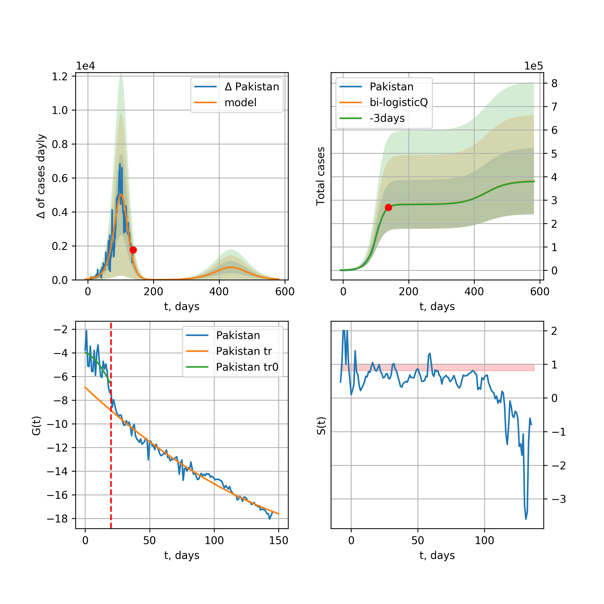

Multi-logistic model of COVID-19 dynamics
Model, code, results
Project maintained by algmaknick Hosted on GitHub Pages — Theme by mattgraham
World

World data at: 2020-06-23
+3 day model MAPE: 0.007067
model: bi-Richards
coeffs: [ 1.26809412e+07 1.56024868e+00 -4.09870533e+01 1.84728661e-02]
S.Korea scenario coeffs: [0.36242246, 2.56241634, 1.84890887, 0.13324732]
rational stdev: 0.081714
forecast at the end of period: +543 days
deltaDaycases: 11418
total cases: 20985358 ± 1714803
total death: 1075924 ± 263755
bi-Richards approximation splitting point: 50
trend coefficient of determination: 0.843132
intercept: -2.335399
slope: -0.033631
trend coefficient of determination: 0.405699
intercept: -3.790274
slope: -0.006264
European Union

European Union data at: 2020-06-23
+3 day model MAPE: 0.003725
model: bi-Richards
coeffs: [ 2.46927331e+05 3.96103616e+00 -3.72741726e+01 9.68992240e-03]
rational stdev: 0.583373
forecast at the end of period: +25 days
deltaDaycases: 1261
total cases: 1294697 ± 755291
total death: 136448 ± 238800
bi-Richards approximation splitting point: 83
trend coefficient of determination: 0.943508
intercept: -1.117334
slope: -0.057441
trend coefficient of determination: 0.005333
intercept: -5.664956
slope: -0.002182
Brazil

Brazil data at: 2020-06-23
+3 day model MAPE: 0.005680
model: Richards
coeffs: [2.30479971e+06 8.81963683e-02 7.23900541e+01 4.80304612e-01]
S.Korea scenario coeffs: [0.36242246, 2.56241634, 1.84890887, 0.13324732]
rational stdev: 0.263147
forecast at the end of period: +473 days
deltaDaycases: 350
total cases: 3115678 ± 819880
total death: 142788 ± 112722
trend coefficient of determination: 0.770494
intercept: -5.549499
slope: -0.050707
Russia

Russia data at: 2020-06-23
+3 day model MAPE: 0.009498
model: Richards
coeffs: [ 7.68484623e+05 2.58680908e+00 -6.48251242e+01 1.41852015e-02]
S.Korea scenario coeffs: [0.36242246, 2.56241634, 1.84890887, 0.13324732]
rational stdev: 0.087776
forecast at the end of period: +543 days
deltaDaycases: 147
total cases: 1035013 ± 90848
total death: 14426 ± 3798
trend coefficient of determination: 0.971146
intercept: -1.530196
slope: -0.033434
USA

USA data at: 2020-06-23
+3 day model MAPE: 0.014758
model: bi-Richards
coeffs: [1.31371970e+06 3.69081396e+00 2.69318434e+00 1.19502375e-02]
rational stdev: 0.291055
forecast at the end of period: +137 days
deltaDaycases: 177
total cases: 3425243 ± 996935
total death: 174442 ± 152316
bi-Richards approximation splitting point: 90
trend coefficient of determination: 0.944774
intercept: -1.339960
slope: -0.042542
trend coefficient of determination: 0.469281
intercept: -6.684482
slope: 0.020706
Spain

Spain data at: 2020-06-23
+3 day model MAPE: 0.004562
model: bi-Richards
coeffs: [2.47590978e+03 2.07486002e+02 6.26160278e+01 6.27793087e-03]
rational stdev: 0.218395
forecast at the end of period: +39 days
deltaDaycases: 11
total cases: 294332 ± 64280
total death: 28373 ± 18589
bi-Richards approximation splitting point: 95
trend coefficient of determination: 0.955289
intercept: -0.705376
slope: -0.060803
trend coefficient of determination: 0.003586
intercept: -7.228904
slope: 0.002726
Italy

Italy data at: 2020-06-23
+3 day model MAPE: 0.001619
model: bi-Richards
coeffs: [ 7.73965173e+04 1.16027521e+01 -1.84670637e+01 6.36262510e-03]
S.Korea scenario coeffs: [0.36242246, 2.56241634, 1.84890887, 0.13324732]
rational stdev: 0.074486
forecast at the end of period: +25 days
deltaDaycases: 8
total cases: 237031 ± 17655
total death: 34413 ± 7689
bi-Richards approximation splitting point: 36
trend coefficient of determination: 0.883327
intercept: -1.157250
slope: -0.049300
trend coefficient of determination: 0.952197
intercept: -1.497743
slope: -0.050086
United Kingdom

United Kingdom data at: 2020-06-23
+3 day model MAPE: 0.001848
model: Richards
coeffs: [ 3.19953219e+05 4.16832446e+00 -6.50814725e+01 1.09686013e-02]
S.Korea scenario coeffs: [0.36242246, 2.56241634, 1.84890887, 0.13324732]
rational stdev: 0.145499
forecast at the end of period: +333 days
deltaDaycases: 201
total cases: 422273 ± 61440
total death: 59197 ± 25839
trend coefficient of determination: 0.975438
intercept: -1.423526
slope: -0.044096
France

France data at: 2020-06-23
+3 day model MAPE: 0.001894
model: bi-Richards
coeffs: [ 2.99706520e+04 3.79856548e+00 -5.24376995e+00 1.28569806e-02]
rational stdev: 0.100763
forecast at the end of period: +25 days
deltaDaycases: 129
total cases: 166367 ± 16763
total death: 30659 ± 9267
bi-Richards approximation splitting point: 85
trend coefficient of determination: 0.902705
intercept: -0.846713
slope: -0.069246
trend coefficient of determination: 0.000687
intercept: -5.855043
slope: -0.001796
Germany

Germany data at: 2020-06-23
+3 day model MAPE: 0.006119
model: bi-Richards
coeffs: [ 1.73505562e+04 8.31080461e+00 -5.93163568e+00 6.90868229e-03]
rational stdev: 0.135086
forecast at the end of period: +39 days
deltaDaycases: 35
total cases: 195852 ± 26456
total death: 9129 ± 3699
bi-Richards approximation splitting point: 94
trend coefficient of determination: 0.950730
intercept: -1.428578
slope: -0.061146
trend coefficient of determination: 0.420355
intercept: -14.786305
slope: 0.084983
Turkey

Turkey data at: 2020-06-23
+3 day model MAPE: 0.002702
model: bi-Richards
coeffs: [ 8.18588362e+04 4.66269586e+00 -2.27573111e+01 8.50153941e-03]
rational stdev: 0.202961
forecast at the end of period: +39 days
deltaDaycases: 579
total cases: 227052 ± 46082
total death: 5971 ± 3635
bi-Richards approximation splitting point: 75
trend coefficient of determination: 0.776000
intercept: -0.961991
slope: -0.057838
trend coefficient of determination: 0.170990
intercept: -5.876611
slope: 0.007924
Iran

Iran data at: 2020-06-23
+3 day model MAPE: 0.006491
model: bi-Richards
coeffs: [ 1.61289657e+05 3.87317457e+00 -4.28006857e+00 1.13666335e-02]
S.Korea scenario coeffs: [0.36242246, 2.56241634, 1.84890887, 0.13324732]
rational stdev: 0.269592
forecast at the end of period: +417 days
deltaDaycases: 139
total cases: 312040 ± 84123
total death: 14657 ± 11854
bi-Richards approximation splitting point: 75
trend coefficient of determination: 0.949243
intercept: -0.914173
slope: -0.055130
trend coefficient of determination: 0.204389
intercept: -3.824633
slope: -0.005278
Canada

Canada data at: 2020-06-23
+3 day model MAPE: 0.000691
model: Richards
coeffs: [ 1.09909687e+05 2.72626799e+00 -6.71068722e+01 1.55371262e-02]
S.Korea scenario coeffs: [0.36242246, 2.56241634, 1.84890887, 0.13324732]
rational stdev: 0.160995
forecast at the end of period: +420 days
deltaDaycases: 26
total cases: 147871 ± 23806
total death: 12260 ± 5921
trend coefficient of determination: 0.981491
intercept: -1.600197
slope: -0.044299
South Africa

South Africa data at: 2020-06-23
+3 day model MAPE: 0.000575
model: bi-Richards
coeffs: [4.59444479e+06 1.19724820e-01 7.46386164e+01 1.32282507e-01]
rational stdev: 0.267626
forecast at the end of period: +431 days
deltaDaycases: 387
total cases: 4571518 ± 1223458
total death: 90561 ± 72709
bi-Richards approximation splitting point: 30
trend coefficient of determination: 0.496028
intercept: -1.204695
slope: -0.103546
trend coefficient of determination: 0.145221
intercept: -3.906380
slope: -0.005137
Belgium

Belgium data at: 2020-06-23
+3 day model MAPE: 0.001730
model: Richards
coeffs: [ 6.02121785e+04 6.72223712e+00 -4.71848769e+01 9.69342072e-03]
S.Korea scenario coeffs: [0.36242246, 2.56241634, 1.84890887, 0.13324732]
rational stdev: 0.476866
forecast at the end of period: +249 days
deltaDaycases: 21
total cases: 81050 ± 38650
total death: 12945 ± 18519
trend coefficient of determination: 0.851980
intercept: -1.148970
slope: -0.059416
Peru

Peru data at: 2020-06-23
+3 day model MAPE: 0.013265
model: Richards
coeffs: [3.74550917e+05 1.18282673e-01 5.30396299e+01 3.61212351e-01]
S.Korea scenario coeffs: [0.36242246, 2.56241634, 1.84890887, 0.13324732]
rational stdev: 0.345086
forecast at the end of period: +753 days
deltaDaycases: 0
total cases: 510250 ± 176079
total death: 16441 ± 17020
trend coefficient of determination: 0.908763
intercept: -3.183872
slope: -0.056833
Netherlands

Netherlands data at: 2020-06-23
+3 day model MAPE: 0.001676
model: bi-Richards
coeffs: [4.69193057e+03 4.67147507e+00 4.30016079e+01 1.79346882e-02]
rational stdev: 0.131921
forecast at the end of period: +25 days
deltaDaycases: 14
total cases: 50855 ± 6708
total death: 6233 ± 2466
bi-Richards approximation splitting point: 75
trend coefficient of determination: 0.962075
intercept: -0.863875
slope: -0.062689
trend coefficient of determination: 0.328754
intercept: -4.246867
slope: -0.018042
India

India data at: 2020-06-23
+3 day model MAPE: 0.006054
model: Richards
coeffs: [3.43132968e+06 2.09525195e-01 6.40291953e+00 8.15049992e-02]
S.Korea scenario coeffs: [0.36242246, 2.56241634, 1.84890887, 0.13324732]
rational stdev: 0.368504
forecast at the end of period: +1033 days
deltaDaycases: 817
total cases: 4525566 ± 1667690
total death: 143562 ± 158709
trend coefficient of determination: 0.753856
intercept: -2.042746
slope: -0.023361
Switzerland

Switzerland data at: 2020-06-23
+3 day model MAPE: 0.001684
model: bi-Richards
coeffs: [ 1.29788664e+03 8.02760159e+00 -7.32563377e+01 4.24929734e-03]
rational stdev: 0.350449
forecast at the end of period: +39 days
deltaDaycases: 6
total cases: 31682 ± 11103
total death: 1977 ± 2078
bi-Richards approximation splitting point: 80
trend coefficient of determination: 0.962203
intercept: -1.033065
slope: -0.084936
trend coefficient of determination: 0.067038
intercept: -9.137804
slope: 0.017281
Ecuador

Ecuador data at: 2020-06-23
+3 day model MAPE: 0.009622
model: Richards
coeffs: [ 6.08200346e+04 2.32199141e+00 -8.08747814e+01 1.35685821e-02]
S.Korea scenario coeffs: [0.36242246, 2.56241634, 1.84890887, 0.13324732]
rational stdev: 0.342013
forecast at the end of period: +613 days
deltaDaycases: 10
total cases: 81831 ± 27987
total death: 6772 ± 6948
trend coefficient of determination: 0.223512
intercept: -2.115752
slope: -0.035880
Portugal

Portugal data at: 2020-06-23
+3 day model MAPE: 0.001402
model: bi-Richards
coeffs: [ 2.76477341e+04 1.57733255e+00 -3.43929801e+01 1.98513491e-02]
rational stdev: 0.053431
forecast at the end of period: +193 days
deltaDaycases: 1
total cases: 55751 ± 2978
total death: 2160 ± 346
bi-Richards approximation splitting point: 61
trend coefficient of determination: 0.904666
intercept: -1.211629
slope: -0.070425
trend coefficient of determination: 0.039850
intercept: -5.300854
slope: 0.003544
Saudi Arabia

Saudi Arabia data at: 2020-06-23
+3 day model MAPE: 0.023459
model: Richards
coeffs: [ 5.16009748e+05 1.04589934e+00 -1.04309417e+02 1.77383896e-02]
S.Korea scenario coeffs: [0.36242246, 2.56241634, 1.84890887, 0.13324732]
rational stdev: 0.308732
forecast at the end of period: +431 days
deltaDaycases: 78
total cases: 518645 ± 160122
total death: 4252 ± 3938
trend coefficient of determination: 0.240123
intercept: -2.081521
slope: -0.017078
Sweden

Sweden data at: 2020-06-23
+3 day model MAPE: 0.007743
model: bi-Richards
coeffs: [3.08048287e+04 3.48297019e+00 3.95332213e+01 1.76766033e-02]
rational stdev: 0.245213
forecast at the end of period: +88 days
deltaDaycases: 19
total cases: 81836 ± 20067
total death: 6942 ± 5106
bi-Richards approximation splitting point: 90
trend coefficient of determination: 0.853766
intercept: -1.355805
slope: -0.037810
trend coefficient of determination: 0.039993
intercept: -2.611409
slope: -0.016801
Pakistan

Pakistan data at: 2020-06-23
+3 day model MAPE: 0.030687
model: bi-logisticQ
coeffs: [ 4.70597062e+05 6.65319057e-06 1.15338449e+02 -8.30146011e+03]
S.Korea scenario coeffs: [0.35416971, 0.02606324, 4.35859408, 19.30413219]
rational stdev: 0.383666
forecast at the end of period: +627 days
deltaDaycases: 6
total cases: 637331 ± 244522
total death: 12667 ± 14579
bi-logisticQ approximation splitting point: 20
trend coefficient of determination: 0.391568
intercept_: -3.9808806978581046
coeffs_: [ 0. -0.04620278 -0.00453428]
trend coefficient of determination: 0.962615
intercept_: -5.95256047914195
coeffs_: [ 0. -0.13966122 0.00050438]
Pakistan

Pakistan data at: 2020-06-23
+3 day model MAPE: 0.086455
model: Richards
coeffs: [2.06681448e+05 4.79841446e-02 1.07075288e+02 5.30468568e+00]
S.Korea scenario coeffs: [0.36242246, 2.56241634, 1.84890887, 0.13324732]
rational stdev: 0.387038
forecast at the end of period: +158 days
deltaDaycases: 23
total cases: 281325 ± 108883
total death: 5591 ± 6491
trend coefficient of determination: 0.872676
intercept: -21.328065
slope: -0.466555
Ireland

Ireland data at: 2020-06-23
+3 day model MAPE: 0.001434
model: logisticQ
coeffs: [ 2.49951824e+04 7.83408230e-07 3.61289940e+01 -1.50395223e+05]
S.Korea scenario coeffs: [0.35416971, 0.02606324, 4.35859408, 19.30413219]
rational stdev: 0.290498
forecast at the end of period: +95 days
deltaDaycases: 38
total cases: 33152 ± 9630
total death: 2245 ± 1956
trend coefficient of determination: 0.979101
intercept_: -4.3667951721468246
coeffs_: [ 0. -0.22344596 0.00091249]
Mexico

Mexico data at: 2020-06-23
+3 day model MAPE: 0.005749
model: Richards
coeffs: [ 8.18076658e+05 4.89252649e-01 -6.79927449e+01 3.74585213e-02]
S.Korea scenario coeffs: [0.36242246, 2.56241634, 1.84890887, 0.13324732]
rational stdev: 0.191243
forecast at the end of period: +893 days
deltaDaycases: 298
total cases: 1061896 ± 203080
total death: 129690 ± 74407
trend coefficient of determination: 0.904272
intercept: -2.075161
slope: -0.022438
Singapore

Singapore data at: 2020-06-22
+3 day model MAPE: 0.007220
model: bi-Richards
coeffs: [ 3.73965012e+04 5.27223939e+00 -2.40150610e+01 7.72910710e-03]
S.Korea scenario coeffs: [0.36242246, 2.56241634, 1.84890887, 0.13324732]
rational stdev: 0.260424
forecast at the end of period: +334 days
deltaDaycases: 65
total cases: 53524 ± 13939
total death: 32 ± 25
bi-Richards approximation splitting point: 60
trend coefficient of determination: 0.125180
intercept: -2.318645
slope: -0.021605
trend coefficient of determination: 0.611026
intercept: 0.397073
slope: -0.038659
Chile

Chile data at: 2020-06-23
+3 day model MAPE: 0.000391
model: Richards
coeffs: [3.17026250e+05 6.27392244e-02 5.45235196e+01 1.48980674e+00]
S.Korea scenario coeffs: [0.36242246, 2.56241634, 1.84890887, 0.13324732]
rational stdev: 0.099010
forecast at the end of period: +165 days
deltaDaycases: 283
total cases: 422715 ± 41852
total death: 7594 ± 2255
trend coefficient of determination: 0.980601
intercept: -16.365284
slope: -0.084355
Israel

Israel data at: 2020-06-23
+3 day model MAPE: 0.014938
model: bi-Richards
coeffs: [9.39372742e+03 6.12294547e+00 2.68230208e+01 1.14429310e-02]
rational stdev: 0.130866
forecast at the end of period: +39 days
deltaDaycases: 33
total cases: 25974 ± 3399
total death: 371 ± 145
bi-Richards approximation splitting point: 70
trend coefficient of determination: 0.928068
intercept: -0.996091
slope: -0.092487
trend coefficient of determination: 0.569902
intercept: -12.099263
slope: 0.079521
Austria

Austria data at: 2020-06-23
+3 day model MAPE: 0.002832
model: bi-Richards
coeffs: [ 2.30997256e+03 8.73352594e+00 -3.62364713e+01 6.13310135e-03]
rational stdev: 0.375449
forecast at the end of period: +25 days
deltaDaycases: 3
total cases: 17478 ± 6562
total death: 695 ± 782
bi-Richards approximation splitting point: 65
trend coefficient of determination: 0.933056
intercept: -1.063190
slope: -0.092163
trend coefficient of determination: 0.061804
intercept: -5.155128
slope: -0.015034
Belarus

Belarus data at: 2020-06-23
+3 day model MAPE: 0.002533
model: Richards
coeffs: [ 7.63819799e+04 2.71287603e+00 -8.32404693e+01 1.31922286e-02]
S.Korea scenario coeffs: [0.36242246, 2.56241634, 1.84890887, 0.13324732]
rational stdev: 0.178577
forecast at the end of period: +473 days
deltaDaycases: 32
total cases: 101283 ± 18086
total death: 607 ± 325
trend coefficient of determination: 0.949784
intercept: -1.730012
slope: -0.038129
Japan

Japan data at: 2020-06-23
+3 day model MAPE: 0.004948
model: bi-Richards
coeffs: [2.98483968e+03 7.81000349e+00 8.37674587e+00 5.49394745e-03]
rational stdev: 0.692128
forecast at the end of period: +18 days
deltaDaycases: 24
total cases: 18454 ± 12772
total death: 980 ± 2034
bi-Richards approximation splitting point: 115
trend coefficient of determination: 0.000537
intercept: -3.625842
slope: -0.001419
trend coefficient of determination: 0.145897
intercept: -7.894398
slope: 0.013762
China

China data at: 2020-06-23
+3 day model MAPE: 0.000334
model: bi-Richards
coeffs: [1.27233163e+03 9.51950423e+01 3.48577545e+01 1.71019094e-03]
rational stdev: 0.098381
forecast at the end of period: +11 days
deltaDaycases: 0
total cases: 83045 ± 8170
total death: 4612 ± 1361
bi-Richards approximation splitting point: 110
trend coefficient of determination: 0.821006
intercept: -1.970588
slope: -0.082662
trend coefficient of determination: 0.229334
intercept: -17.086275
slope: 0.056757
Qatar

Qatar data at: 2020-06-23
+3 day model MAPE: 0.009534
model: bi-Richards
coeffs: [1.14817100e+05 1.01717715e-01 5.41688457e+01 5.09383825e-01]
S.Korea scenario coeffs: [0.36242246, 2.56241634, 1.84890887, 0.13324732]
rational stdev: 0.194071
forecast at the end of period: +333 days
deltaDaycases: 32
total cases: 155054 ± 30091
total death: 171 ± 99
bi-Richards approximation splitting point: 20
trend coefficient of determination: 0.033364
intercept: -6.706108
slope: 0.024429
trend coefficient of determination: 0.965114
intercept: -5.049056
slope: -0.052592
Poland

Poland data at: 2020-06-23
+3 day model MAPE: 0.000071
model: bi-Richards
coeffs: [ 2.39290478e+04 3.24614269e+00 -2.08485696e+01 1.24690539e-02]
rational stdev: 0.116693
forecast at the end of period: +123 days
deltaDaycases: 3
total cases: 42682 ± 4980
total death: 1804 ± 631
bi-Richards approximation splitting point: 60
trend coefficient of determination: 0.712429
intercept: -1.167439
slope: -0.047537
trend coefficient of determination: 0.526562
intercept: -2.896988
slope: -0.016068
UAE

UAE data at: 2020-06-23
+3 day model MAPE: 0.007847
model: Richards
coeffs: [5.72890328e+04 1.54956655e-01 2.91081160e+01 2.57057848e-01]
S.Korea scenario coeffs: [0.36242246, 2.56241634, 1.84890887, 0.13324732]
rational stdev: 0.257220
forecast at the end of period: +627 days
deltaDaycases: 0
total cases: 77988 ± 20060
total death: 520 ± 401
trend coefficient of determination: 0.010049
intercept: -5.693553
slope: -0.007756
Romania

Romania data at: 2020-06-23
+3 day model MAPE: 0.006594
model: bi-Richards
coeffs: [4.05302590e+05 1.32379969e-01 1.06797939e+02 1.68823981e-01]
rational stdev: 0.119995
forecast at the end of period: +473 days
deltaDaycases: 1
total cases: 425763 ± 51089
total death: 26739 ± 9625
bi-Richards approximation splitting point: 77
trend coefficient of determination: 0.934702
intercept: -1.986256
slope: -0.059156
trend coefficient of determination: 0.166276
intercept: -7.318137
slope: 0.010784
Panama

Panama data at: 2020-06-23
+3 day model MAPE: 0.010516
model: bi-Richards
coeffs: [4.56310897e+04 2.29839784e+00 1.18278984e+01 1.94824861e-02]
rational stdev: 0.221384
forecast at the end of period: +81 days
deltaDaycases: 62
total cases: 57728 ± 12780
total death: 1132 ± 751
bi-Richards approximation splitting point: 70
trend coefficient of determination: 0.874624
intercept: -1.307654
slope: -0.048666
trend coefficient of determination: 0.193593
intercept: -4.904277
slope: 0.012910
Ukraine

Ukraine data at: 2020-06-23
+3 day model MAPE: 0.011956
model: bi-Richards
coeffs: [4.18751577e+04 2.13998883e-01 7.66561062e+01 2.79415038e-01]
rational stdev: 0.168160
forecast at the end of period: +228 days
deltaDaycases: 0
total cases: 69190 ± 11635
total death: 1880 ± 948
bi-Richards approximation splitting point: 65
trend coefficient of determination: 0.823959
intercept: -2.524465
slope: -0.069293
trend coefficient of determination: 0.006552
intercept: -6.897451
slope: 0.001378
Indonesia

Indonesia data at: 2020-06-23
+3 day model MAPE: 0.013104
model: Richards
coeffs: [ 2.87199676e+05 6.18127622e-01 -1.83826561e+02 1.95117997e-02]
S.Korea scenario coeffs: [0.36242246, 2.56241634, 1.84890887, 0.13324732]
rational stdev: 0.251650
forecast at the end of period: +1201 days
deltaDaycases: 124
total cases: 352785 ± 88778
total death: 18671 ± 14095
trend coefficient of determination: 0.757231
intercept: -2.230855
slope: -0.021356
Bangladesh

Bangladesh data at: 2020-06-23
+3 day model MAPE: 0.007832
model: bi-Richards
coeffs: [ 7.50442078e+05 3.41971839e-01 -1.97272773e+01 5.51871682e-02]
S.Korea scenario coeffs: [0.36242246, 2.56241634, 1.84890887, 0.13324732]
rational stdev: 0.398924
forecast at the end of period: +921 days
deltaDaycases: 227
total cases: 984597 ± 392779
total death: 12761 ± 15271
bi-Richards approximation splitting point: 29
trend coefficient of determination: 0.029602
intercept: -4.335597
slope: 0.047499
trend coefficient of determination: 0.843184
intercept: -1.356193
slope: -0.027865
South_Korea

South Korea data at: 2020-06-23
+3 day model MAPE: 0.000761
model: bi-Richards
coeffs: [ 7.28962409e+03 2.23466870e+00 -1.36429906e+02 8.04830420e-03]
rational stdev: 0.158091
forecast at the end of period: +123 days
deltaDaycases: 15
total cases: 16785 ± 2653
total death: 376 ± 178
bi-Richards approximation splitting point: 73
trend coefficient of determination: 0.865715
intercept: -1.336568
slope: -0.089459
trend coefficient of determination: 0.454932
intercept: -9.345221
slope: 0.032071
Moldova

Moldova data at: 2020-06-23
+3 day model MAPE: 0.005272
model: bi-Richards
coeffs: [ 5.37210445e+04 9.62229462e-01 -2.84862902e+01 2.48378655e-02]
S.Korea scenario coeffs: [0.36242246, 2.56241634, 1.84890887, 0.13324732]
rational stdev: 0.355983
forecast at the end of period: +291 days
deltaDaycases: 2
total cases: 59937 ± 21336
total death: 1996 ± 2131
bi-Richards approximation splitting point: 60
trend coefficient of determination: 0.545303
intercept: -1.508944
slope: -0.039827
trend coefficient of determination: 0.000396
intercept: -3.954288
slope: -0.000548
Denmark

Denmark data at: 2020-06-23
+3 day model MAPE: 0.002272
model: bi-Richards
coeffs: [2.36656925e+03 2.55721433e+00 1.82340299e+01 1.62786716e-02]
rational stdev: 0.260012
forecast at the end of period: +74 days
deltaDaycases: 7
total cases: 14455 ± 3758
total death: 693 ± 540
bi-Richards approximation splitting point: 100
trend coefficient of determination: 0.912288
intercept: -1.515910
slope: -0.048969
trend coefficient of determination: 0.099954
intercept: 13.318570
slope: -0.189201
Serbia

Serbia data at: 2020-06-23
+3 day model MAPE: 0.006539
model: bi-Richards
coeffs: [ 1.01946715e+04 1.50512595e+00 -8.49917731e+01 1.43884281e-02]
rational stdev: 0.125456
forecast at the end of period: +109 days
deltaDaycases: 24
total cases: 19307 ± 2422
total death: 387 ± 145
bi-Richards approximation splitting point: 50
trend coefficient of determination: 0.684419
intercept: -1.213597
slope: -0.049118
trend coefficient of determination: 0.159250
intercept: -4.153872
slope: -0.013559
Kuwait

Kuwait data at: 2020-06-23
+3 day model MAPE: 0.017779
model: Richards
coeffs: [4.43601481e+04 1.07615555e-01 6.39922703e+01 6.86776340e-01]
S.Korea scenario coeffs: [0.36242246, 2.56241634, 1.84890887, 0.13324732]
rational stdev: 0.602996
forecast at the end of period: +172 days
deltaDaycases: 73
total cases: 57141 ± 34455
total death: 465 ± 841
trend coefficient of determination: 0.928801
intercept: -5.543272
slope: -0.058133
Philippines

Philippines data at: 2020-06-23
+3 day model MAPE: 0.014272
model: Richards
coeffs: [ 2.69642824e+05 4.74765553e-01 -2.33281243e+02 1.99518542e-02]
S.Korea scenario coeffs: [0.36242246, 2.56241634, 1.84890887, 0.13324732]
rational stdev: 0.354303
forecast at the end of period: +1509 days
deltaDaycases: 97
total cases: 327822 ± 116148
total death: 12216 ± 12984
trend coefficient of determination: 0.519083
intercept: -2.215868
slope: -0.023160
Norway

Norway data at: 2020-06-23
+3 day model MAPE: 0.000619
model: bi-Richards
coeffs: [ 7.50080076e+02 4.88865544e+00 -4.72560205e+00 9.28259660e-03]
rational stdev: 0.148686
forecast at the end of period: +25 days
deltaDaycases: 5
total cases: 8976 ± 1334
total death: 253 ± 112
bi-Richards approximation splitting point: 91
trend coefficient of determination: 0.938333
intercept: -0.921088
slope: -0.068108
trend coefficient of determination: 0.000917
intercept: -6.930758
slope: 0.002405
Czechia

Czechia data at: 2020-06-23
+3 day model MAPE: 0.007249
model: bi-Richards
coeffs: [ 4.08904770e+03 2.50838277e+00 -2.35339862e+01 1.51625442e-02]
rational stdev: 2.343372
forecast at the end of period: +53 days
deltaDaycases: 9
total cases: 11826 ± 27713
total death: 376 ± 2643
bi-Richards approximation splitting point: 61
trend coefficient of determination: 0.426015
intercept: -1.481148
slope: -0.055059
trend coefficient of determination: 0.001098
intercept: -5.426304
slope: 0.000938
Colombia

Colombia data at: 2020-06-23
+3 day model MAPE: 0.028183
model: bi-Richards
coeffs: [ 5.20917655e+05 6.88627504e-01 -5.87806974e+01 2.68061176e-02]
S.Korea scenario coeffs: [0.36242246, 2.56241634, 1.84890887, 0.13324732]
rational stdev: 0.182482
forecast at the end of period: +893 days
deltaDaycases: 249
total cases: 669291 ± 122133
total death: 21869 ± 11972
bi-Richards approximation splitting point: 40
trend coefficient of determination: 0.752753
intercept: -1.054459
slope: -0.065136
trend coefficient of determination: 0.328802
intercept: -2.960463
slope: -0.005993
Australia

Australia data at: 2020-06-23
+3 day model MAPE: 0.004304
model: bi-Richards
coeffs: [ 1.22384896e+03 6.06977451e+00 -7.06337675e+01 6.75955987e-03]
rational stdev: 0.659099
forecast at the end of period: +25 days
deltaDaycases: 1
total cases: 7476 ± 4928
total death: 102 ± 201
bi-Richards approximation splitting point: 50
trend coefficient of determination: 0.754832
intercept: -0.971683
slope: -0.083424
trend coefficient of determination: 0.009991
intercept: -6.192595
slope: -0.003382
Malaysia

Malaysia data at: 2020-06-23
+3 day model MAPE: 0.000269
model: bi-Richards
coeffs: [2.08346966e+03 1.25646875e-01 8.27527004e+01 1.10792956e+00]
S.Korea scenario coeffs: [0.36242246, 2.56241634, 1.84890887, 0.13324732]
rational stdev: 0.140742
forecast at the end of period: +25 days
deltaDaycases: 0
total cases: 8638 ± 1215
total death: 121 ± 51
bi-Richards approximation splitting point: 70
trend coefficient of determination: 0.816536
intercept: -6.157600
slope: -0.143610
trend coefficient of determination: 0.391106
intercept: -10.785066
slope: -0.050933
Dominican Republic

Dominican Republic data at: 2020-06-23
+3 day model MAPE: 0.026176
model: Richards
coeffs: [ 5.78504381e+04 1.26496727e+00 -1.30299876e+02 1.48913131e-02]
S.Korea scenario coeffs: [0.36242246, 2.56241634, 1.84890887, 0.13324732]
rational stdev: 0.384377
forecast at the end of period: +907 days
deltaDaycases: 18
total cases: 75744 ± 29114
total death: 1830 ± 2110
trend coefficient of determination: 0.031344
intercept: -3.129249
slope: -0.007289
Egypt

Egypt data at: 2020-06-23
+3 day model MAPE: 0.014124
model: logisticQ
coeffs: [ 9.90468083e+04 1.02278319e-04 8.33137672e+01 -5.51087159e+02]
S.Korea scenario coeffs: [0.35416971, 0.02606324, 4.35859408, 19.30413219]
rational stdev: 0.224233
forecast at the end of period: +508 days
deltaDaycases: 0
total cases: 134094 ± 30068
total death: 5454 ± 3668
trend coefficient of determination: 0.974198
intercept_: -7.83171343943588
coeffs_: [ 0. -0.10518041 0.00039462]
Finland

Finland data at: 2020-06-23
+3 day model MAPE: 0.001462
model: Richards
coeffs: [ 7.38904740e+03 4.97886169e-01 -1.61882173e+01 1.02273327e-01]
S.Korea scenario coeffs: [0.36242246, 2.56241634, 1.84890887, 0.13324732]
rational stdev: 0.151878
forecast at the end of period: +305 days
deltaDaycases: 1
total cases: 9968 ± 1513
total death: 455 ± 207
trend coefficient of determination: 0.880005
intercept: -1.846774
slope: -0.058185
Morocco

Morocco data at: 2020-06-23
+3 day model MAPE: 0.094323
model: bi-Richards
coeffs: [1.88258652e+04 2.11038961e+00 5.04411094e+01 2.98743037e-02]
rational stdev: 0.110836
forecast at the end of period: +165 days
deltaDaycases: 0
total cases: 27787 ± 3079
total death: 574 ± 190
bi-Richards approximation splitting point: 85
trend coefficient of determination: 0.879735
intercept: -1.589611
slope: -0.047485
trend coefficient of determination: 0.243819
intercept: -11.488319
slope: 0.073349
Argentina

Argentina data at: 2020-06-23
+3 day model MAPE: 0.012762
model: bi-Richards
coeffs: [ 1.02751184e+06 2.55729394e-01 -1.97760591e+00 5.90776979e-02]
rational stdev: 0.118015
forecast at the end of period: +473 days
deltaDaycases: 42
total cases: 1027330 ± 121240
total death: 23461 ± 8306
bi-Richards approximation splitting point: 38
trend coefficient of determination: 0.099978
intercept: -1.671493
slope: -0.071522
trend coefficient of determination: 0.039876
intercept: -3.922141
slope: 0.002245
Algeria

Algeria data at: 2020-06-23
+3 day model MAPE: 0.010281
model: logisticQ
coeffs: [ 1.27450894e+04 9.30874064e-07 5.04620427e+01 -6.29948695e+04]
S.Korea scenario coeffs: [0.35416971, 0.02606324, 4.35859408, 19.30413219]
rational stdev: 0.242580
forecast at the end of period: +249 days
deltaDaycases: 3
total cases: 17132 ± 4155
total death: 1221 ± 888
trend coefficient of determination: 0.960317
intercept_: -6.908984972460571
coeffs_: [ 0. -0.14048575 0.00071709]
Luxembourg

Luxembourg data at: 2020-06-23
+3 day model MAPE: 0.004141
model: bi-Richards
coeffs: [ 2.45223803e+02 1.66844184e+01 -1.83254982e+01 3.86767198e-03]
rational stdev: 0.237595
forecast at the end of period: +11 days
deltaDaycases: 0
total cases: 4112 ± 977
total death: 109 ± 77
bi-Richards approximation splitting point: 75
trend coefficient of determination: 0.627866
intercept: -1.677193
slope: -0.070860
trend coefficient of determination: 0.142331
intercept: -9.882409
slope: 0.030776
Thailand

Thailand data at: 2020-06-23
+3 day model MAPE: 0.000423
model: bi-Richards
coeffs: [ 2.25924456e+02 6.67160405e+00 -4.44076748e+01 6.85285149e-03]
rational stdev: 0.073370
forecast at the end of period: +39 days
deltaDaycases: 0
total cases: 3210 ± 235
total death: 58 ± 12
bi-Richards approximation splitting point: 60
trend coefficient of determination: 0.843251
intercept: -1.242651
slope: -0.117530
trend coefficient of determination: 0.000003
intercept: -7.637398
slope: -0.000239
Hungary

Hungary data at: 2020-06-22
+3 day model MAPE: 0.000492
model: Richards
coeffs: [ 4.19007587e+03 2.86826738e+00 -3.94345467e+01 1.93599919e-02]
S.Korea scenario coeffs: [0.36242246, 2.56241634, 1.84890887, 0.13324732]
rational stdev: 0.431220
forecast at the end of period: +306 days
deltaDaycases: 1
total cases: 5643 ± 2433
total death: 786 ± 1016
trend coefficient of determination: 0.906598
intercept: -1.179089
slope: -0.053450
Greece

Greece data at: 2020-06-23
+3 day model MAPE: 0.006614
model: bi-Richards
coeffs: [ 1.71635258e+03 3.54273577e+00 -8.47979456e+00 1.03722373e-02]
rational stdev: 0.132602
forecast at the end of period: +95 days
deltaDaycases: 2
total cases: 4531 ± 600
total death: 260 ± 103
bi-Richards approximation splitting point: 90
trend coefficient of determination: 0.837731
intercept: -1.211380
slope: -0.064472
trend coefficient of determination: 0.189181
intercept: -12.096679
slope: 0.062240
Iraq

Iraq data at: 2020-06-23
+3 day model MAPE: 0.077751
model: bi-Richards
coeffs: [4.72672633e+04 8.99005410e-02 7.45445776e+01 2.01789408e+00]
S.Korea scenario coeffs: [0.36242246, 2.56241634, 1.84890887, 0.13324732]
rational stdev: 0.085465
forecast at the end of period: +81 days
deltaDaycases: 333
total cases: 54427 ± 4651
total death: 1973 ± 505
bi-Richards approximation splitting point: 45
trend coefficient of determination: 0.727601
intercept: -17.113078
slope: -0.070731
trend coefficient of determination: 0.909345
intercept: -13.792634
slope: -0.122618
Croatia

Croatia data at: 2020-06-23
+3 day model MAPE: 0.002192
model: Richards
coeffs: [ 2.26177182e+03 9.65671877e+00 -4.01335408e+01 8.88619511e-03]
S.Korea scenario coeffs: [0.36242246, 2.56241634, 1.84890887, 0.13324732]
rational stdev: 0.446918
forecast at the end of period: +165 days
deltaDaycases: 0
total cases: 3047 ± 1362
total death: 137 ± 183
trend coefficient of determination: 0.710718
intercept: -1.341226
slope: -0.074015
Iceland

Iceland data at: 2020-06-23
+3 day model MAPE: 0.000459
model: logisticQ
coeffs: [ 1.80575848e+03 5.97222522e-06 1.33543959e+01 -2.95327593e+04]
rational stdev: 0.053372
forecast at the end of period: +18 days
deltaDaycases: 0
total cases: 1805 ± 96
total death: 9 ± 1
trend coefficient of determination: 0.921357
intercept_: -4.428186390367218
coeffs_: [ 0. -0.3024808 0.00185934]
Estonia

Estonia data at: 2020-06-22
+3 day model MAPE: 0.002671
model: bi-Richards
coeffs: [2.38322562e+02 9.01100346e-02 7.82140202e+01 2.45480097e+00]
rational stdev: 0.100648
forecast at the end of period: +5 days
deltaDaycases: 0
total cases: 1987 ± 199
total death: 69 ± 20
bi-Richards approximation splitting point: 50
trend coefficient of determination: 0.890065
intercept: -14.839531
slope: -0.202915
trend coefficient of determination: 0.259743
intercept: -21.372608
slope: -0.045106
Bulgaria

Bulgaria data at: 2020-06-23
+3 day model MAPE: 0.010247
model: bi-Richards
coeffs: [1.25333208e+03 1.63687274e+01 6.05003291e+01 1.09738945e-02]
rational stdev: 0.111207
forecast at the end of period: +25 days
deltaDaycases: 5
total cases: 4613 ± 513
total death: 233 ± 77
bi-Richards approximation splitting point: 71
trend coefficient of determination: 0.673689
intercept: -2.043269
slope: -0.038831
trend coefficient of determination: 0.470630
intercept: -9.719205
slope: 0.062928
New Zealand

New Zealand data at: 2020-06-23
+3 day model MAPE: 0.000587
model: Richards
coeffs: [ 1.49831274e+03 6.56364699e-01 -1.91477156e+00 2.74447622e-01]
rational stdev: 0.051354
forecast at the end of period: +11 days
deltaDaycases: 0
total cases: 1498 ± 76
total death: 21 ± 3
trend coefficient of determination: 0.743414
intercept: -3.364194
slope: -0.110852
Slovenia

Slovenia data at: 2020-06-23
+3 day model MAPE: 0.031149
model: bi-Richards
coeffs: [8.12435728e+01 7.93371050e+00 7.28270872e+01 1.89567565e-02]
rational stdev: 0.180116
forecast at the end of period: +25 days
deltaDaycases: 0
total cases: 1568 ± 282
total death: 111 ± 59
bi-Richards approximation splitting point: 75
trend coefficient of determination: 0.904420
intercept: -0.817884
slope: -0.095133
trend coefficient of determination: 0.460679
intercept: -16.187672
slope: 0.093296
Slovakia

Slovakia data at: 2020-06-22
+3 day model MAPE: 0.014882
model: bi-Richards
coeffs: [ 2.61300554e+02 3.01907044e+00 -5.46484259e+01 1.02021253e-02]
rational stdev: 0.215927
forecast at the end of period: +110 days
deltaDaycases: 0
total cases: 1730 ± 373
total death: 30 ± 19
bi-Richards approximation splitting point: 66
trend coefficient of determination: 0.789876
intercept: -0.964418
slope: -0.080350
trend coefficient of determination: 0.059533
intercept: -9.332699
slope: 0.026117
Lithuania

Lithuania data at: 2020-06-22
+3 day model MAPE: 0.000296
model: bi-Richards
coeffs: [ 4.47129815e+02 2.66947519e+00 -2.28941102e+01 1.76047132e-02]
rational stdev: 0.144566
forecast at the end of period: +18 days
deltaDaycases: 1
total cases: 1856 ± 268
total death: 78 ± 33
bi-Richards approximation splitting point: 48
trend coefficient of determination: 0.873625
intercept: -0.916143
slope: -0.089366
trend coefficient of determination: 0.246595
intercept: -4.153688
slope: -0.020259
Latvia

Latvia data at: 2020-06-20
+3 day model MAPE: 0.002574
model: Richards
coeffs: [ 1.10660293e+03 9.45746208e+00 -7.78116838e+01 5.69238307e-03]
S.Korea scenario coeffs: [0.36242246, 2.56241634, 1.84890887, 0.13324732]
rational stdev: 0.239271
forecast at the end of period: +231 days
deltaDaycases: 1
total cases: 1426 ± 341
total death: 38 ± 27
trend coefficient of determination: 0.623748
intercept: -1.757132
slope: -0.054109
Cyprus

Cyprus data at: 2020-06-23
+3 day model MAPE: 0.001607
model: bi-Richards
coeffs: [ 9.53972185e+01 8.87048742e+00 -2.14377899e+00 7.61626788e-03]
rational stdev: 0.112781
forecast at the end of period: +11 days
deltaDaycases: 0
total cases: 999 ± 112
total death: 19 ± 6
bi-Richards approximation splitting point: 70
trend coefficient of determination: 0.728496
intercept: -1.366991
slope: -0.075111
trend coefficient of determination: 0.183760
intercept: -1.819109
slope: -0.058240
Malta

Malta data at: 2020-06-22
+3 day model MAPE: 0.009747
model: bi-Richards
coeffs: [1.97170937e+02 5.44937220e+00 1.97140371e+01 1.84819632e-02]
rational stdev: 0.195672
forecast at the end of period: +12 days
deltaDaycases: 0
total cases: 656 ± 128
total death: 8 ± 4
bi-Richards approximation splitting point: 50
trend coefficient of determination: 0.733524
intercept: -0.971310
slope: -0.095335
trend coefficient of determination: 0.237510
intercept: -2.972915
slope: -0.034810
Sri Lanka

Sri Lanka data at: 2020-06-23
+3 day model MAPE: 0.009295
model: Richards
coeffs: [1.95292347e+03 3.73655293e-02 6.76959700e+01 5.89110452e+00]
S.Korea scenario coeffs: [0.36242246, 2.56241634, 1.84890887, 0.13324732]
rational stdev: 0.157266
forecast at the end of period: +109 days
deltaDaycases: 0
total cases: 2656 ± 417
total death: 14 ± 6
trend coefficient of determination: 0.950266
intercept: -30.525506
slope: -0.239063
References
- Worldometers COVID-19 Coronavirus Pandemic
- Su COVID-19 susijusi gyventojų ir verslo statistika
- Bi-logistic growth
- Least squares
- scikit-learn
- scipy.org
- European Centre for Disease Prevention and Control An agency of the European Union
- Aaron Miller, Mac Josh Reandelar, Kimberly Fasciglione, Violeta Roumenova, Yan Li, Gonzalo H Otazu, Correlation between universal BCG vaccination policy and reduced morbidity and mortality for COVID-19: an epidemiological study, https://doi.org/10.1101/2020.03.24.20042937
- c19.se